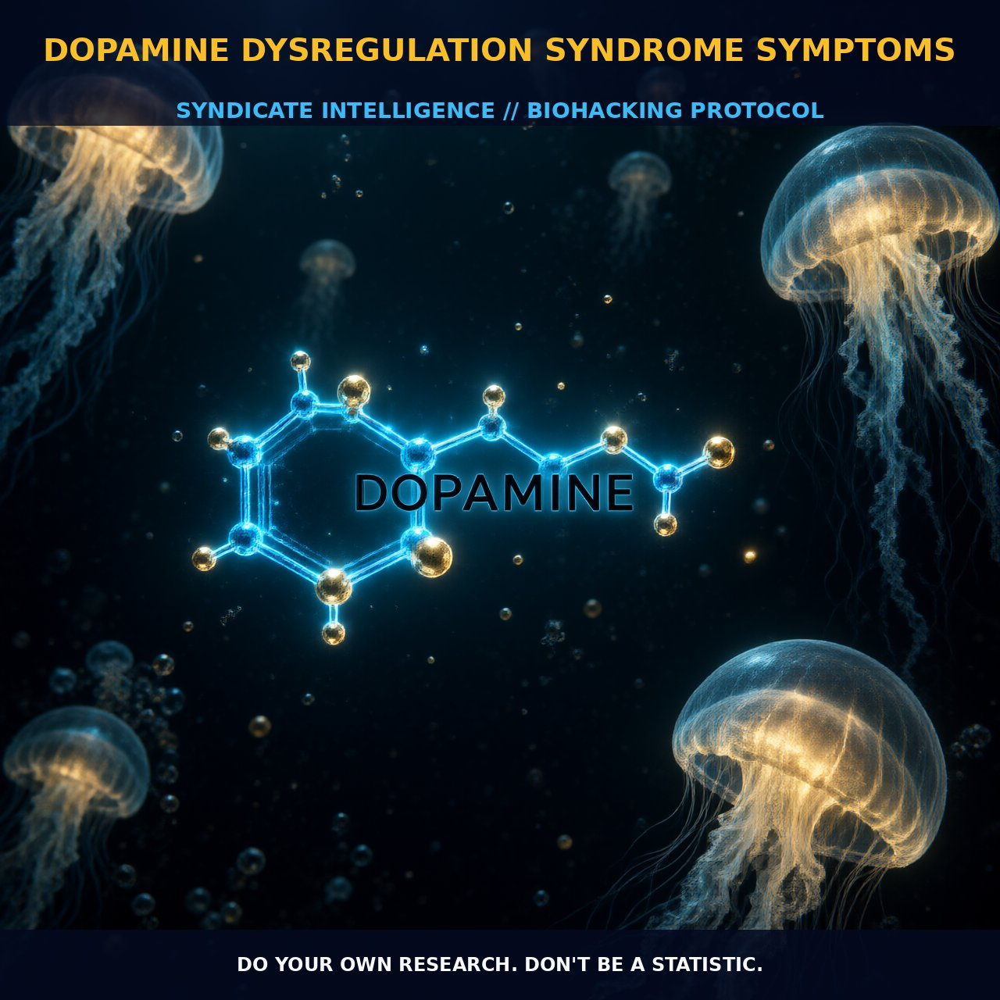

Understanding Dopamine Dysregulation Syndrome: Mechanisms and Management

The Mechanism
Dopamine dysregulation syndrome (DDS) is a condition that develops as a result of excessive use of dopamine replacement therapy, commonly seen in individuals with Parkinson's disease who are treated with high doses of L-DOPA. This condition leads to behavioral and psychological symptoms such as pathological gambling, hypersexuality, and compulsive eating.
The syndrome occurs when the brain's dopamine-producing neurons are overstimulated, leading to an imbalance in the dopaminergic pathways. This overstimulation disrupts the normal functioning of D1 and D2 dopamine receptors, which play critical roles in regulating motivation, reward, and movement. D1 receptors, predominantly found in the striatum, are involved in the modulation of neuronal activity, whereas D2 receptors, crucial for motor function, are densely populated in the substantia nigra and striatum. Excessive activation of these receptors can lead to a cascade of downstream effects, including alterations in cAMP signaling pathways and changes in calcium influx, contributing to the observed symptoms.
DDS is also observed in individuals with schizophrenia, where high levels of dopamine in the mesolimbic pathway are associated with the onset of psychotic symptoms. The mesolimbic pathway, a part of the brain's reward system, regulates mood, motivation, and pleasure. The excessive dopamine can lead to an overactivity of D2 receptors in this region, causing disruptions in normal neurotransmission and resulting in characteristic symptoms of schizophrenia, such as delusions and hallucinations. Additionally, the overactivity of D1 receptors in the prefrontal cortex can impair working memory and cognitive function, leading to further cognitive deficits.
The interplay between these receptors and their downstream pathways is crucial in understanding the mechanisms behind DDS.
The Biological Leverage
The dysregulation of dopamine in the body can lead to a wide range of symptoms, including those related to motivation, reward, and cognitive function. Dopamine, a neurotransmitter, plays a key role in regulating these processes, and its imbalance can have significant consequences. In the brain, dopamine is synthesized from the amino acid tyrosine through enzymatic steps, including the conversion of tyrosine to DOPA and then to dopamine.
The brain contains several different dopamine systems, including the nigrostriatal, mesolimbic, and mesocortical pathways, each involved in different aspects of behavior and cognition. High levels of dopamine can disrupt the normal functioning of these pathways, leading to dysregulation. For instance, in the mesolimbic pathway, excessive activation of D2 receptors can lead to an increase in intracellular calcium, causing neuronal hyperexcitability and alterations in gene expression. This can result in the hyperactivity and hyperarousal observed in individuals with DDS.
Additionally, the overactivity of D1 receptors in the prefrontal cortex can lead to an increase in cAMP levels, impairing working memory and cognitive flexibility. The disruption of these pathways can lead to a range of symptoms, including mood swings, depression, social withdrawal, and poor observational skills. Furthermore, the dysregulation of dopamine can affect other parts of the body, including the digestive system, blood vessels, and immune system, leading to additional physiological symptoms.
Tactical Implementation
To manage dopamine dysregulation syndrome effectively, it is crucial to carefully monitor and adjust dopamine levels. This can be achieved through a combination of medication management and lifestyle modifications. For individuals with Parkinson's disease, the primary goal is to maintain optimal dopamine levels without overstimulating the receptors. This can be achieved by using a combination of L-DOPA and dopamine agonists, such as carbidopa, to reduce the fluctuations in dopamine levels and minimize the risk of DDS. The dosage of L-DOPA should be carefully titrated, starting with low-to-moderate amounts and gradually increasing as necessary to control motor symptoms.
For individuals with schizophrenia, the management of dopamine dysregulation may involve the use of antipsychotic medications that target the D2 receptors, such as risperidone or olanzapine. These medications can help to normalize excessive dopamine activity in the mesolimbic pathway and reduce symptoms of psychosis. Additionally, lifestyle modifications such as regular exercise, a balanced diet, and adequate sleep can support overall dopamine balance. Foods rich in tyrosine and DOPA, such as bananas, avocados, and certain nuts and seeds, can also be beneficial. It is important to monitor the response to these interventions and adjust the dosing as needed to maintain optimal dopamine levels without causing dysregulation.
Prostar Life Hack
Monitor and adjust dopamine levels through a combination of medication management and lifestyle modifications, such as regular exercise, balanced diet, and adequate sleep. Start with low-to-moderate doses of L-DOPA and gradually increase as needed, and consider incorporating foods rich in tyrosine and DOPA into your diet.
[ AUTHOR: LEAD TECHNICAL RESEARCHER ]